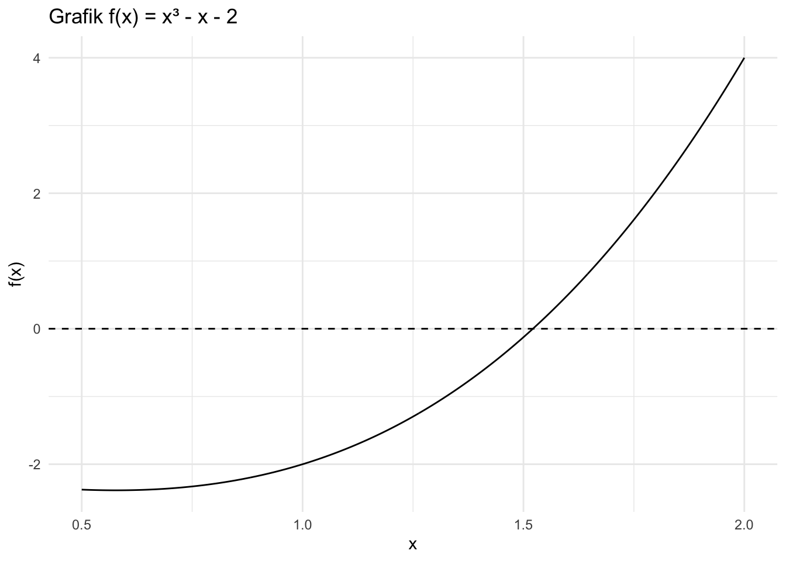

library(ggplot2)Modul Praktikum Metode Pencarian Akar Persamaan Nonlinear
Implementasi dan Eksperimen Menggunakan R
Pendahuluan
Dalam banyak permasalahan matematika, kita perlu menentukan nilai (x) yang memenuhi suatu persamaan nonlinear
\[ f(x)=0. \]
Untuk beberapa persamaan sederhana, akar dapat diperoleh secara analitik. Namun, untuk persamaan nonlinear yang lebih kompleks, penyelesaian secara analitik sering kali tidak mudah atau bahkan tidak tersedia.
Metode numerik memberikan pendekatan untuk memperoleh akar persamaan tersebut secara bertahap melalui proses iterasi.
Pada praktikum ini akan dipelajari lima metode pencarian akar persamaan nonlinear satu variabel:
- Metode Bisection
- Metode Regula Falsi
- Metode Fixed Point
- Metode Newton-Raphson
- Metode Secant
Praktikum dilakukan menggunakan R sebagai alat bantu komputasi.
Namun, penggunaan R bukan tujuan utama praktikum. Hal yang lebih penting adalah memahami bagaimana setiap metode bekerja.
Oleh karena itu, setiap metode akan dipelajari dengan urutan:
Ide dasar → Perhitungan manual → Algoritma → Implementasi R → Penerapan → Eksperimen → Analisis
Tujuan Praktikum
Setelah mengikuti praktikum ini, mahasiswa diharapkan mampu:
- Menjelaskan konsep dasar pencarian akar persamaan nonlinear.
- Menjelaskan ide dasar lima metode pencarian akar.
- Melakukan beberapa iterasi secara manual.
- Menuliskan langkah algoritmik suatu metode.
- Mengimplementasikan metode menggunakan R.
- Mengubah fungsi dan parameter pada kode R.
- Menentukan akar persamaan nonlinear secara numerik.
- Membandingkan kecepatan dan karakteristik beberapa metode.
- Menjelaskan kondisi ketika suatu metode dapat mengalami kegagalan atau tidak konvergen.
- Menginterpretasikan hasil komputasi numerik.
Persiapan
Perangkat Lunak
Praktikum menggunakan:
- R
- RStudio
- Quarto
Pastikan R dan RStudio telah terpasang sebelum praktikum dimulai.
Package
Sebagian besar praktikum hanya menggunakan fungsi dasar R.
Untuk membuat grafik, digunakan ggplot2.
Konsep Dasar
apa itu akar persamaan \(f(x)=0\) ?
akar persamaan adalah nilai \(x=x^*\) yang memenuhi
\[ f(x^*)=0. \]
Secara geometris, akar merupakan titik ketika grafik \(y=f(x)\) memotong sumbu-\(x\).
Sebagai contoh,
\[ f(x)=x^2-4. \]
Persamaan
\[ x^2-4=0 \]
memiliki dua akar:
\[ x=-2 \]
dan
\[ x=2. \]
Dalam praktikum ini kita akan menggunakan pendekatan numerik untuk menemukan akar tersebut.
Contoh
Agar karakteristik kelima metode dapat dibandingkan, pada bagian awal praktikum kita menggunakan persamaan yang sama:
\[ f(x)=x^3-x-2. \]
Kita ingin mencari (x) yang memenuhi
\[ x^3-x-2=0. \]
Perhatikan bahwa
\[ f(1)=1^3-1-2=-2 \]
dan
\[ f(2)=2^3-2-2=4. \]
Karena
\[ f(1)<0 \]
dan
\[ f(2)>0, \]
terdapat perubahan tanda pada interval \([1,2]\).
Akar persamaan tersebut adalah sekitar
\[ x^*\approx1.52138. \]
Nilai tersebut akan digunakan sebagai pembanding hasil metode numerik.
Praktikum 1 — Metode Bisection
Ide Dasar
Ide utama metode Bisection adalah:
mencari akar dengan cara mempersempit interval yang mengandung akar.
Jika pada suatu interval ([a,b]) berlaku
\[ f(a)f(b)<0, \]
maka terdapat setidaknya satu akar di antara (a) dan (b), dengan asumsi (f) kontinu.
Titik tengah interval dihitung dengan
\[ c=\frac{a+b}{2}. \]
Kemudian diperiksa tanda (f(c)).
Jika
\[ f(a)f(c)<0, \]
maka akar berada pada interval
\[ [a,c]. \]
Jika
\[ f(c)f(b)<0, \]
maka akar berada pada interval
\[ [c,b]. \]
Proses tersebut diulang sampai diperoleh ketelitian yang diinginkan.
Perhitungan Manual
Gunakan
\[ f(x)=x^3-x-2 \]
dengan interval awal
\[ [a,b]=[1,2]. \]
Iterasi 1
Titik tengah:
\[ c_1=\frac{1+2}{2}=1.5. \]
Hitung:
\[ f(1.5)=1.5^3-1.5-2=-0.125. \]
Karena
\[ f(1)<0 \]
dan
\[ f(1.5)<0, \]
akar belum berada pada interval \([1,1.5]\).
Karena
\[ f(1.5)<0 \]
dan
\[ f(2)>0, \]
interval baru adalah
\[ [1.5,2]. \]
Iterasi 2
\[ c_2=\frac{1.5+2}{2}=1.75. \]
Hitung:
\[ f(1.75)=1.75^3-1.75-2=1.609375. \]
Karena
\[ f(1.5)<0 \]
dan
\[ f(1.75)>0, \]
interval baru adalah
\[ [1.5,1.75]. \]
Iterasi 3
\[ c_3=\frac{1.5+1.75}{2}=1.625. \]
Hitung:
\[ f(1.625)=1.625^3-1.625-2. \]
Mahasiswa melanjutkan perhitungan.
Latihan Perhitungan Manual
Lengkapi minimal 5 iterasi berikut.
| Iterasi | (a) | (b) | (c) | (f(c)) | Interval Baru |
|---|---|---|---|---|---|
| 1 | 1 | 2 | 1.5 | -0.125 | [1.5, 2] |
| 2 | 1.5 | 2 | 1.75 | 1.609375 | [1.5, 1.75] |
| 3 | |||||
| 4 | |||||
| 5 |
Algoritma Bisection
Secara umum:
Tentukan (a) dan (b).
Pastikan (f(a)f(b)<0).
Hitung titik tengah
\[ c=\frac{a+b}{2}. \]
Hitung (f(c)).
Tentukan interval baru berdasarkan perubahan tanda.
Ulangi proses.
Berhenti ketika interval atau error telah memenuhi toleransi.
Implementasi R
bisection <- function(f, a, b, tol = 1e-6, max_iter = 100) {
if (f(a) * f(b) > 0) {
stop("Interval tidak mengandung perubahan tanda.")
}
hasil <- data.frame()
for (i in 1:max_iter) {
c <- (a + b) / 2
fc <- f(c)
hasil <- rbind(
hasil,
data.frame(
iterasi = i,
a = a,
b = b,
c = c,
f_c = fc,
error = abs(b - a)
)
)
if (abs(b - a) < tol || abs(fc) < tol) {
break
}
if (f(a) * fc < 0) {
b <- c
} else {
a <- c
}
}
list(
akar = c,
iterasi = hasil
)
}Eksekusi Program
Definisikan fungsi:
f <- function(x) {
x^3 - x - 2
}Jalankan:
hasil_bisection <- bisection(
f = f,
a = 1,
b = 2
)
hasil_bisection$akar[1] 1.52138Tampilkan tabel iterasi:
hasil_bisection$iterasi iterasi a b c f_c error
1 1 1.000000 2.000000 1.500000 -1.250000e-01 1.000000e+00
2 2 1.500000 2.000000 1.750000 1.609375e+00 5.000000e-01
3 3 1.500000 1.750000 1.625000 6.660156e-01 2.500000e-01
4 4 1.500000 1.625000 1.562500 2.521973e-01 1.250000e-01
5 5 1.500000 1.562500 1.531250 5.911255e-02 6.250000e-02
6 6 1.500000 1.531250 1.515625 -3.405380e-02 3.125000e-02
7 7 1.515625 1.531250 1.523438 1.225042e-02 1.562500e-02
8 8 1.515625 1.523438 1.519531 -1.097125e-02 7.812500e-03
9 9 1.519531 1.523438 1.521484 6.221756e-04 3.906250e-03
10 10 1.519531 1.521484 1.520508 -5.178886e-03 1.953125e-03
11 11 1.520508 1.521484 1.520996 -2.279443e-03 9.765625e-04
12 12 1.520996 1.521484 1.521240 -8.289059e-04 4.882812e-04
13 13 1.521240 1.521484 1.521362 -1.034331e-04 2.441406e-04
14 14 1.521362 1.521484 1.521423 2.593543e-04 1.220703e-04
15 15 1.521362 1.521423 1.521393 7.795631e-05 6.103516e-05
16 16 1.521362 1.521393 1.521378 -1.273947e-05 3.051758e-05
17 17 1.521378 1.521393 1.521385 3.260816e-05 1.525879e-05
18 18 1.521378 1.521385 1.521381 9.934278e-06 7.629395e-06
19 19 1.521378 1.521381 1.521379 -1.402611e-06 3.814697e-06
20 20 1.521379 1.521381 1.521380 4.265829e-06 1.907349e-06
21 21 1.521379 1.521380 1.521380 1.431608e-06 9.536743e-07Pertanyaan
- Apakah hasil R sama dengan hasil perhitungan manual?
- Berapa iterasi yang diperlukan?
- Berapa nilai akar yang diperoleh?
- Apa yang terjadi pada panjang interval dari satu iterasi ke iterasi berikutnya?
- Mengapa Bisection disebut sebagai metode yang stabil?
Praktikum 2 — Metode Regula Falsi
Ide Dasar
Regula Falsi memiliki prinsip yang mirip dengan Bisection, yaitu mempertahankan interval yang memiliki perubahan tanda.
Perbedaannya adalah titik baru tidak diperoleh dari titik tengah.
Regula Falsi menggunakan garis lurus yang menghubungkan dua titik pada grafik fungsi.
Jika terdapat dua titik
\[ (a,f(a)) \]
dan
\[ (b,f(b)), \]
maka titik potong garis tersebut dengan sumbu-(x) diberikan oleh
\[ c= \frac{a f(b)-b f(a)} {f(b)-f(a)}. \]
Jadi ide dasarnya adalah:
menggunakan garis lurus untuk memperkirakan lokasi akar.
Perhitungan Manual
Gunakan
\[ f(x)=x^3-x-2 \]
dengan
\[ a=1,\qquad b=2. \]
Diketahui:
\[ f(1)=-2 \]
dan
\[ f(2)=4. \]
Maka:
\[ c= \frac{1(4)-2(-2)} {4-(-2)} \]
sehingga
\[ c=\frac{8}{6}=1.3333. \]
Hitung:
\[ f(1.3333)\approx-0.9629. \]
Karena \(f(c)<0\), sedangkan \(f(b)>0\), interval baru menjadi
\[ [1.3333,2]. \]
Mahasiswa melanjutkan minimal 4 iterasi.
Algoritma
- Tentukan \(a\) dan \(b\).
- Pastikan \(f(a)f(b)<0\).
- Hitung
\[ c= \frac{a f(b)-b f(a)} {f(b)-f(a)}. \]
- Hitung \(f(c)\).
- Perbarui interval berdasarkan perubahan tanda.
- Ulangi.
- Berhenti ketika kriteria toleransi terpenuhi.
Implementasi R
regula_falsi <- function(f, a, b, tol = 1e-6, max_iter = 100) {
if (f(a) * f(b) > 0) {
stop("Interval tidak mengandung perubahan tanda.")
}
hasil <- data.frame()
for (i in 1:max_iter) {
c <- (a * f(b) - b * f(a)) / (f(b) - f(a))
fc <- f(c)
hasil <- rbind(
hasil,
data.frame(
iterasi = i,
a = a,
b = b,
c = c,
f_c = fc
)
)
if (abs(fc) < tol) {
break
}
if (f(a) * fc < 0) {
b <- c
} else {
a <- c
}
}
list(
akar = c,
iterasi = hasil
)
}Jalankan:
hasil_rf <- regula_falsi(f, 1, 2)
hasil_rf$akar[1] 1.52138hasil_rf$iterasi iterasi a b c f_c
1 1 1.000000 2 1.333333 -9.629630e-01
2 2 1.333333 2 1.462687 -3.333389e-01
3 3 1.462687 2 1.504019 -1.018180e-01
4 4 1.504019 2 1.516331 -2.989480e-02
5 5 1.516331 2 1.519919 -8.675066e-03
6 6 1.519919 2 1.520957 -2.508805e-03
7 7 1.520957 2 1.521258 -7.248228e-04
8 8 1.521258 2 1.521344 -2.093499e-04
9 9 1.521344 2 1.521370 -6.046133e-05
10 10 1.521370 2 1.521377 -1.746113e-05
11 11 1.521377 2 1.521379 -5.042711e-06
12 12 1.521379 2 1.521379 -1.456314e-06
13 13 1.521379 2 1.521380 -4.205770e-07Pertanyaan
- Apa perbedaan utama Bisection dan Regula Falsi?
- Mengapa Regula Falsi tidak menggunakan titik tengah?
- Bandingkan jumlah iterasi Regula Falsi dan Bisection.
- Apakah Regula Falsi selalu lebih cepat?
Praktikum 3 — Metode Fixed Point
Ide Dasar
Metode Fixed Point mengubah persamaan
\[ f(x)=0 \]
menjadi bentuk
\[ x=g(x). \]
Kemudian digunakan proses iterasi:
\[ x_{n+1}=g(x_n). \]
Ide dasarnya:
gunakan nilai sebelumnya untuk menghasilkan nilai berikutnya.
Berbeda dengan Bisection dan Regula Falsi, metode Fixed Point tidak secara langsung mempertahankan interval yang mengandung perubahan tanda.
0.1 2. Contoh
Gunakan persamaan
\[ x^2+x-2=0. \]
Persamaan tersebut dapat ditulis menjadi
\[ x^2=2-x. \]
Sehingga
\[ x=\sqrt{2-x}. \]
Dengan demikian:
\[ g(x)=\sqrt{2-x}. \]
Gunakan tebakan awal:
\[ x_0=0. \]
0.2 3. Perhitungan Manual
Iterasi pertama:
\[ x_1=g(x_0) \]
\[ x_1=\sqrt{2-0}=\sqrt{2}=1.4142. \]
Iterasi kedua:
\[ x_2=\sqrt{2-1.4142} \]
\[ x_2\approx0.7654. \]
Iterasi berikutnya:
\[ x_3=\sqrt{2-0.7654}. \]
Mahasiswa melanjutkan sampai minimal 5 iterasi.
| Iterasi | (x_n) | (g(x_n)) | ( |
|---|---|---|---|
| 0 | 0 | 1.4142 | 1.4142 |
| 1 | 1.4142 | 0.7654 | 0.6488 |
| 2 | 0.7654 | … | … |
| 3 | … | … | … |
| 4 | … | … | … |
0.3 4. Konvergensi Fixed Point
Tidak semua bentuk
\[ x=g(x) \]
akan menghasilkan metode yang konvergen.
Salah satu kondisi yang umum digunakan adalah
\[ |g'(x^*)|<1 \]
di sekitar fixed point (x^*).
Hal ini menunjukkan bahwa pemilihan bentuk (g(x)) sangat penting.
0.4 5. Implementasi R
fixed_point <- function(g, x0, tol = 1e-6, max_iter = 100) {
hasil <- data.frame()
x <- x0
for (i in 1:max_iter) {
x_new <- g(x)
error <- abs(x_new - x)
hasil <- rbind(
hasil,
data.frame(
iterasi = i,
x_lama = x,
x_baru = x_new,
error = error
)
)
if (error < tol) {
x <- x_new
break
}
x <- x_new
}
list(
akar = x,
iterasi = hasil
)
}Jalankan:
g <- function(x) {
sqrt(2 - x)
}
hasil_fp <- fixed_point(
g = g,
x0 = 0
)
hasil_fp$akar[1] 0.9999998hasil_fp$iterasi iterasi x_lama x_baru error
1 1 0.0000000 1.4142136 1.414214e+00
2 2 1.4142136 0.7653669 6.488467e-01
3 3 0.7653669 1.1111405 3.457736e-01
4 4 1.1111405 0.9427935 1.683470e-01
5 5 0.9427935 1.0282055 8.541201e-02
6 6 1.0282055 0.9857964 4.240910e-02
7 7 0.9857964 1.0070768 2.128038e-02
8 8 1.0070768 0.9964553 1.062143e-02
9 9 0.9964553 1.0017708 5.315431e-03
10 10 1.0017708 0.9991142 2.656540e-03
11 11 0.9991142 1.0004428 1.328564e-03
12 12 1.0004428 0.9997786 6.642086e-04
13 13 0.9997786 1.0001107 3.321227e-04
14 14 1.0001107 0.9999446 1.660568e-04
15 15 0.9999446 1.0000277 8.302953e-05
16 16 1.0000277 0.9999862 4.151448e-05
17 17 0.9999862 1.0000069 2.075731e-05
18 18 1.0000069 0.9999965 1.037864e-05
19 19 0.9999965 1.0000017 5.189323e-06
20 20 1.0000017 0.9999991 2.594660e-06
21 21 0.9999991 1.0000004 1.297330e-06
22 22 1.0000004 0.9999998 6.486652e-070.5 6. Latihan
Gunakan persamaan
\[ x^3+x-1=0. \]
Ubah persamaan tersebut menjadi bentuk
\[ x=g(x). \]
Kemudian:
- Tentukan (g(x)).
- Tentukan tebakan awal.
- Lakukan 5 iterasi manual.
- Implementasikan menggunakan R.
- Bandingkan hasil manual dan R.
- Periksa apakah metode konvergen.
1 Praktikum 4 — Metode Newton-Raphson
1.1 1. Ide Dasar
Newton-Raphson menggunakan garis singgung untuk memperkirakan lokasi akar.
Jika kita berada pada titik (x_n), garis singgung grafik (f(x)) digunakan untuk memperkirakan titik potong dengan sumbu-(x).
Rumus iterasinya adalah
\[ x_{n+1} = x_n- \frac{f(x_n)} {f'(x_n)}. \]
Ide dasarnya:
bergerak dari satu titik ke titik berikutnya menggunakan kemiringan garis singgung.
1.2 2. Perhitungan Manual
Gunakan
\[ f(x)=x^3-x-2. \]
Turunannya:
\[ f'(x)=3x^2-1. \]
Gunakan
\[ x_0=1.5. \]
Maka:
\[ f(1.5)=-0.125 \]
dan
\[ f'(1.5)=3(1.5)^2-1=5.75. \]
Sehingga
\[ x_1= 1.5-\frac{-0.125}{5.75}. \]
Maka:
\[ x_1\approx1.52174. \]
Lakukan beberapa iterasi berikutnya secara manual.
| Iterasi | (x_n) | (f(x_n)) | (f’(x_n)) | (x_{n+1}) |
|---|---|---|---|---|
| 0 | 1.50000 | -0.12500 | 5.75000 | 1.52174 |
| 1 | 1.52174 | … | … | … |
| 2 | … | … | … | … |
| 3 | … | … | … | … |
1.3 3. Implementasi R
newton_raphson <- function(f, df, x0, tol = 1e-6, max_iter = 100) {
hasil <- data.frame()
x <- x0
for (i in 1:max_iter) {
fx <- f(x)
dfx <- df(x)
if (dfx == 0) {
stop("Turunan bernilai nol.")
}
x_new <- x - fx / dfx
error <- abs(x_new - x)
hasil <- rbind(
hasil,
data.frame(
iterasi = i,
x_lama = x,
f_x = fx,
df_x = dfx,
x_baru = x_new,
error = error
)
)
if (error < tol) {
x <- x_new
break
}
x <- x_new
}
list(
akar = x,
iterasi = hasil
)
}Definisikan fungsi dan turunannya:
f <- function(x) {
x^3 - x - 2
}
df <- function(x) {
3*x^2 - 1
}Jalankan:
hasil_newton <- newton_raphson(
f = f,
df = df,
x0 = 1.5
)
hasil_newton$akar[1] 1.52138hasil_newton$iterasi iterasi x_lama f_x df_x x_baru error
1 1 1.500000 -1.250000e-01 5.75000 1.521739 2.173913e-02
2 2 1.521739 2.136928e-03 5.94707 1.521380 3.593245e-04
3 3 1.521380 5.893874e-07 5.94379 1.521380 9.916021e-081.4 4. Pertanyaan
- Mengapa Newton-Raphson membutuhkan turunan?
- Apa yang terjadi jika (f’(x_n)=0)?
- Mengapa Newton-Raphson dapat mencapai akar dengan sedikit iterasi?
- Apakah Newton-Raphson selalu konvergen?
- Bagaimana pengaruh pemilihan (x_0)?
2 Praktikum 5 — Metode Secant
2.1 1. Ide Dasar
Metode Secant memiliki ide yang mirip dengan Newton-Raphson.
Perbedaannya:
Newton-Raphson menggunakan turunan, sedangkan Secant memperkirakan kemiringan menggunakan dua titik.
Kemiringan garis secant antara (x_{n-1}) dan (x_n) digunakan untuk menentukan titik berikutnya.
Rumusnya:
\[ x_{n+1} = x_n- f(x_n) \frac{x_n-x_{n-1}} {f(x_n)-f(x_{n-1})}. \]
2.2 2. Perhitungan Manual
Gunakan
\[ f(x)=x^3-x-2. \]
Gunakan dua tebakan awal:
\[ x_0=1,\qquad x_1=2. \]
Maka:
\[ f(x_0)=-2 \]
dan
\[ f(x_1)=4. \]
Hitung:
\[ x_2= 2- 4 \frac{2-1}{4-(-2)}. \]
Sehingga:
\[ x_2 = 2-\frac{4}{6} = 1.3333. \]
Lanjutkan perhitungan secara manual.
| Iterasi | (x_{n-1}) | (x_n) | (f(x_{n-1})) | (f(x_n)) | (x_{n+1}) |
|---|---|---|---|---|---|
| 1 | 1 | 2 | -2 | 4 | 1.3333 |
| 2 | 2 | 1.3333 | 4 | -0.9629 | … |
| 3 | |||||
| 4 |
2.3 3. Implementasi R
secant <- function(f, x0, x1, tol = 1e-6, max_iter = 100) {
hasil <- data.frame()
for (i in 1:max_iter) {
f0 <- f(x0)
f1 <- f(x1)
if (f1 - f0 == 0) {
stop("Penyebut bernilai nol.")
}
x2 <- x1 - f1 * (x1 - x0) / (f1 - f0)
error <- abs(x2 - x1)
hasil <- rbind(
hasil,
data.frame(
iterasi = i,
x_sebelumnya = x0,
x_sekarang = x1,
x_baru = x2,
error = error
)
)
if (error < tol) {
x1 <- x2
break
}
x0 <- x1
x1 <- x2
}
list(
akar = x1,
iterasi = hasil
)
}Jalankan:
hasil_secant <- secant(
f = f,
x0 = 1,
x1 = 2
)
hasil_secant$akar[1] 1.52138hasil_secant$iterasi iterasi x_sebelumnya x_sekarang x_baru error
1 1 1.000000 2.000000 1.333333 6.666667e-01
2 2 2.000000 1.333333 1.462687 1.293532e-01
3 3 1.333333 1.462687 1.531169 6.848286e-02
4 4 1.462687 1.531169 1.520926 1.024301e-02
5 5 1.531169 1.520926 1.521376 4.498962e-04
6 6 1.520926 1.521376 1.521380 3.391315e-06
7 7 1.521376 1.521380 1.521380 1.180307e-093 Praktikum 6 — Membandingkan Lima Metode
Sekarang gunakan fungsi yang sama:
\[ f(x)=x^3-x-2. \]
Bandingkan kelima metode.
hasil_bisection$akar[1] 1.52138hasil_rf$akar[1] 1.52138hasil_fp$akar[1] 0.9999998hasil_newton$akar[1] 1.52138hasil_secant$akar[1] 1.52138Buat tabel perbandingan:
perbandingan <- data.frame(
Metode = c(
"Bisection",
"Regula Falsi",
"Fixed Point",
"Newton-Raphson",
"Secant"
),
Akar = c(
hasil_bisection$akar,
hasil_rf$akar,
hasil_fp$akar,
hasil_newton$akar,
hasil_secant$akar
),
Iterasi = c(
nrow(hasil_bisection$iterasi),
nrow(hasil_rf$iterasi),
nrow(hasil_fp$iterasi),
nrow(hasil_newton$iterasi),
nrow(hasil_secant$iterasi)
)
)
perbandingan Metode Akar Iterasi
1 Bisection 1.5213799 21
2 Regula Falsi 1.5213796 13
3 Fixed Point 0.9999998 22
4 Newton-Raphson 1.5213797 3
5 Secant 1.5213797 74 Praktikum 7 — Visualisasi Fungsi dan Akar
Visualisasikan fungsi:
x <- seq(0.5, 2, length.out = 500)
data_plot <- data.frame(
x = x,
y = f(x)
)
ggplot(data_plot, aes(x, y)) +
geom_line() +
geom_hline(yintercept = 0, linetype = "dashed") +
labs(
title = "Grafik f(x) = x³ - x - 2",
x = "x",
y = "f(x)"
) +
theme_minimal()
Perhatikan hubungan antara grafik fungsi dan akar.
Pertanyaan:
- Mengapa akar berada pada titik ketika grafik memotong sumbu-(x)?
- Bagaimana interval awal dapat ditentukan dari grafik?
- Apa yang terjadi jika interval awal tidak mengandung perubahan tanda?
5 Praktikum 8 — Menerapkan Metode pada Berbagai Fungsi
Sampai tahap ini, mahasiswa menggunakan fungsi yang sama.
Selanjutnya, gunakan fungsi yang berbeda.
Tujuannya adalah menunjukkan bahwa metode pencarian akar dapat digunakan pada berbagai bentuk persamaan nonlinear.
5.1 Fungsi 1 — Polinomial
\[ f_1(x)=x^2-5. \]
Akar positifnya adalah
\[ x=\sqrt{5}\approx2.23607. \]
5.2 Fungsi 2 — Polinomial Kubik
\[ f_2(x)=x^3-4x-1. \]
Cari salah satu akar pada interval yang sesuai.
5.3 Fungsi 3 — Eksponensial
\[ f_3(x)=e^{-x}-x. \]
Persamaan ini memiliki akar sekitar
\[ x\approx0.567143. \]
5.4 Fungsi 4 — Trigonometri
\[ f_4(x)=\cos(x)-x. \]
Akar positifnya sekitar
\[ x\approx0.739085. \]
Perhatikan bahwa R menggunakan satuan radian untuk fungsi trigonometri.
5.5 Fungsi 5 — Logaritmik
\[ f_5(x)=\ln(x)-2. \]
Perhatikan bahwa domain fungsi adalah
\[ x>0. \]
5.6 Fungsi 6 — Fungsi Campuran
\[ f_6(x)=xe^{-x}-0.2. \]
Fungsi ini memberikan contoh persamaan nonlinear yang tidak berbentuk polinomial sederhana.
6 Tugas 1 — Penerapan Terbimbing
Pilih tiga fungsi dari bagian sebelumnya.
Untuk setiap fungsi:
- Tentukan interval atau tebakan awal.
- Jalankan metode Bisection.
- Jalankan Regula Falsi.
- Jalankan Fixed Point jika memungkinkan.
- Jalankan Newton-Raphson.
- Jalankan Secant.
- Catat hasil akar.
- Catat jumlah iterasi.
- Catat error.
- Tentukan apakah metode konvergen.
Gunakan tabel berikut.
| Fungsi | Metode | Tebakan/Interval | Akar | Iterasi | Error | Konvergen |
|---|---|---|---|---|---|---|
| (f_1) | Bisection | |||||
| (f_1) | Regula Falsi | |||||
| (f_1) | Newton | |||||
| (f_1) | Secant | |||||
| … | … |
7 Tugas 2 — Mengubah Fungsi
Jangan mengubah algoritma metode yang sudah diberikan.
Ubahlah hanya fungsi yang digunakan.
Misalnya:
f_baru <- function(x) {
cos(x) - x
}Kemudian gunakan fungsi tersebut pada metode yang sesuai.
Contoh:
hasil <- bisection(
f = f_baru,
a = 0,
b = 1
)
hasil$akar[1] 0.7390852Lakukan hal yang sama untuk fungsi nonlinear lainnya.
8 Tugas 3 — Eksperimen Initial Guess
Gunakan fungsi
\[ f(x)=\cos(x)-x. \]
Gunakan Newton-Raphson dengan beberapa nilai awal:
\[ x_0=0,\quad x_0=0.5,\quad x_0=1,\quad x_0=2. \]
Bandingkan hasilnya.
| (x_0) | Akar | Iterasi | Konvergen? |
|---|---|---|---|
| 0 | |||
| 0.5 | |||
| 1 | |||
| 2 |
Jawab:
- Apakah semua initial guess menghasilkan akar yang sama?
- Apakah jumlah iterasi sama?
- Apa yang dapat disimpulkan mengenai pengaruh initial guess?
9 Tugas 4 — Eksperimen Toleransi
Gunakan salah satu metode dan fungsi
\[ f(x)=x^3-x-2. \]
Gunakan beberapa nilai toleransi:
10^-2
10^-4
10^-6
10^-8Bandingkan:
- nilai akar,
- jumlah iterasi,
- error.
Buat tabel:
| Toleransi | Akar | Iterasi | Error |
|---|---|---|---|
| (10^{-2}) | |||
| (10^{-4}) | |||
| (10^{-6}) | |||
| (10^{-8}) |
Pertanyaan:
- Apa yang terjadi ketika toleransi semakin kecil?
- Apakah jumlah iterasi bertambah?
- Apakah hasil akar menjadi lebih presisi?
10 Tugas 5 — Perbandingan Metode
Gunakan minimal tiga fungsi nonlinear yang berbeda.
Bandingkan kelima metode berdasarkan:
- jumlah iterasi,
- nilai akar,
- error,
- kebutuhan turunan,
- kebutuhan interval awal,
- kestabilan,
- kemudahan implementasi.
Lengkapi tabel:
| Karakteristik | Bisection | Regula Falsi | Fixed Point | Newton-Raphson | Secant |
|---|---|---|---|---|---|
| Membutuhkan interval | |||||
| Membutuhkan turunan | |||||
| Membutuhkan dua tebakan awal | |||||
| Menggunakan (g(x)) | |||||
| Relatif stabil | |||||
| Cepat konvergen |
11 Tugas 6 — Analisis Konvergensi
Tidak semua metode akan berhasil pada semua kondisi.
Carilah contoh fungsi atau kondisi initial guess yang menyebabkan salah satu metode:
- konvergensinya lambat,
- tidak konvergen,
- menghasilkan error,
- atau gagal dijalankan.
Kemudian jelaskan penyebabnya.
Perhatikan khusus:
11.0.1 Bisection
Apakah interval awal memiliki perubahan tanda?
11.0.2 Regula Falsi
Apakah interval awal memiliki perubahan tanda?
11.0.3 Fixed Point
Apakah bentuk (g(x)) menghasilkan konvergensi?
11.0.4 Newton-Raphson
Apakah turunan mendekati nol?
11.0.5 Secant
Apakah nilai
\[ f(x_n)-f(x_{n-1}) \]
mendekati nol?
12 Refleksi
Jawab pertanyaan berikut dengan kalimat sendiri.
- Apa perbedaan ide dasar kelima metode?
- Mengapa Bisection disebut sebagai metode yang menjamin penyempitan interval?
- Apa perbedaan Bisection dan Regula Falsi?
- Mengapa Newton-Raphson dapat lebih cepat daripada Bisection?
- Apa kelemahan Newton-Raphson?
- Mengapa Secant tidak membutuhkan turunan?
- Mengapa Fixed Point membutuhkan pemilihan (g(x)) yang tepat?
- Apakah metode yang paling cepat selalu merupakan metode yang paling baik?
- Apa peran R dalam penyelesaian masalah numerik?
- Mengapa mahasiswa tetap perlu melakukan beberapa iterasi secara manual sebelum menggunakan R?
13 Tugas Akhir Praktikum
Pilih satu persamaan nonlinear yang berbeda dari contoh utama.
Persamaan dapat berupa:
- polinomial,
- eksponensial,
- logaritmik,
- trigonometri,
- atau kombinasi beberapa fungsi.
Contoh:
\[ f(x)=x e^{-x}-0.2. \]
Lakukan analisis menggunakan minimal tiga metode.
Laporan harus memuat:
13.1 1. Persamaan
Tuliskan persamaan yang digunakan.
13.2 2. Grafik
Buat grafik fungsi dan identifikasi perkiraan lokasi akar.
13.3 3. Perhitungan Manual
Tunjukkan minimal 3 iterasi untuk setiap metode.
13.4 4. Algoritma
Tuliskan langkah-langkah metode dengan bahasa sendiri.
13.5 5. Implementasi R
Tampilkan kode R yang digunakan.
13.6 6. Hasil
Tampilkan:
- akar,
- jumlah iterasi,
- error,
- dan kriteria berhenti.
13.7 7. Perbandingan
Bandingkan hasil dari metode yang digunakan.
13.8 8. Pembahasan
Jelaskan:
- metode mana yang paling cepat,
- metode mana yang paling stabil,
- pengaruh initial guess atau interval,
- dan kemungkinan kegagalan metode.
13.9 9. Kesimpulan
Tuliskan kesimpulan berdasarkan hasil eksperimen.
14 Ringkasan Lima Metode
| Metode | Ide Utama | Informasi yang Dibutuhkan |
|---|---|---|
| Bisection | Mempersempit interval | (a,b) |
| Regula Falsi | Menggunakan garis lurus | (a,b) |
| Fixed Point | Menghasilkan (x) baru dari (g(x)) | (x_0,g(x)) |
| Newton-Raphson | Menggunakan garis singgung | (x_0,f’(x)) |
| Secant | Menggunakan garis melalui dua titik | (x_0,x_1) |
Secara konseptual:
\[ \boxed{ \text{Persamaan} \rightarrow \text{Perhitungan Manual} \rightarrow \text{Algoritma} \rightarrow \text{R} \rightarrow \text{Eksperimen} \rightarrow \text{Analisis} } \]
Inilah alur utama praktikum metode numerik.
15 Penutup
Metode pencarian akar persamaan nonlinear memiliki prinsip yang berbeda-beda. Tidak ada satu metode yang selalu menjadi pilihan terbaik untuk semua permasalahan.
Bisection menekankan kestabilan melalui penyempitan interval. Regula Falsi menggunakan pendekatan garis lurus. Fixed Point mengubah persamaan menjadi bentuk iteratif. Newton-Raphson menggunakan garis singgung dan biasanya memiliki konvergensi yang cepat ketika kondisi awal sesuai. Secant menggunakan pendekatan kemiringan tanpa menghitung turunan secara eksplisit.
Penggunaan R memungkinkan proses iterasi dilakukan dengan cepat sehingga perhatian dapat dialihkan dari perhitungan aritmetika yang berulang menuju analisis perilaku metode.
Dengan demikian, tujuan praktikum bukan sekadar memperoleh nilai akar, tetapi memahami mengapa suatu metode bekerja, bagaimana metode tersebut melakukan iterasi, dan kapan metode tersebut dapat berhasil atau gagal.